Марципан (marzipan) – пластична мигдальна маса з цукровою пудрою. Нею легко замінити класичну кондитерську мастику. Її можна використовувати як для покриття всього кондитерського виробу, так і для ліплення фігурок. Рецепт марципану для торта нескладний, але для його приготування знадобиться багато мигдалю, який коштує досить дорого. Подивіться майстер-клас, щоб дізнатися, як зробити масу в домашніх умовах.
Переваги та недоліки марципану в порівнянні з мастикою
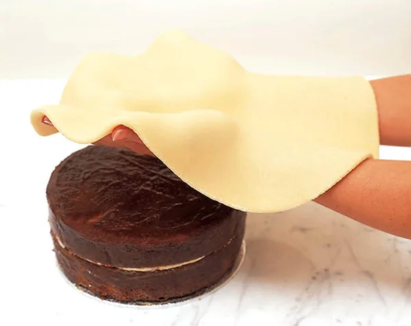
Головна перевага марципану – це його смак, більш м’який і насичений, ніж у мастики. Якщо цукрова паста просто солодка, іноді навіть дуже солодка, то мигдальна маса має безліч відтінків смку: легка гірчинка мигдалю, солодкість сиропу, насичений горіховий присмак. Не дарма ж з марципану навіть виготовляють цукерки, просто покриваючи його шоколадом.
Ще один його плюс – це податливість і еластичність. З нього легко виліпити прикраси різної форми для весільного, іменинного або будь-якого іншого тортика. З іншого боку, повне покриття їм виробу практикується рідко. Він кришиться і рветься, тому зазвичай його використовують для обтягування торта перед покриттям мастикою, для вирівнювання поверхні.
Разом з тим, якщо порівнювати марципанову масу з мастикою в плані еластичності і піддатливості, то остання виграє – з неї створюють більш витончені фігурки з безліччю дрібних деталей.
Важливо!
Марципан варто використовувати в тому випадку, якщо вам не подобається надмірна солодкість мастики, і ви не хочете зіпсувати нею збалансований смак торта. Однак маленькі і тонкі деталі фігурок ліпити з нього досить складно.
Інгредієнти і інструменти
Перед тим як розглянути, як зробити марципан для торта, визначимося з необхідними інгредієнтами і інструментами.
Вам знадобляться:
- сирий мигдаль – 900 г (попередньо залийте його окропом і залиште так на пару хвилин);
- цукрова пудра – 470 г (просійте її, щоб не було грудок);
- лимон – 1 штука;
- холодна вода – 130 мл.
З інструментів:
- кухонні ваги (точність важлива, але можна обійтися і без них);
- кондитерський термометр (про те, як обійтися без нього, читайте в описі кроку №4);
- блендер або кавомолка;
- м’ясорубка (опціонально)
- посуд.
Покрокове приготування
Тепер перейдемо до покрокового рецепта того, як приготувати марципан для торта.
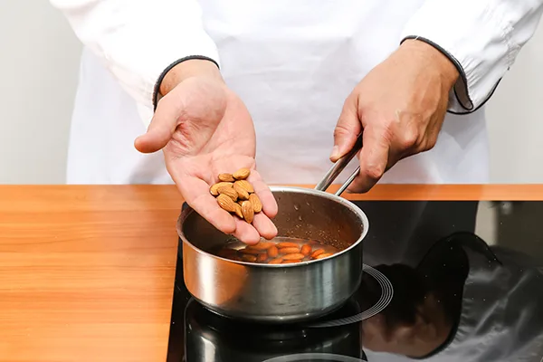
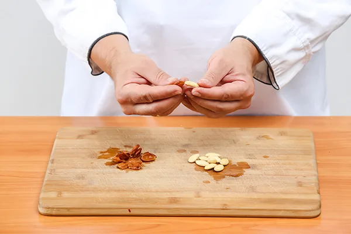
- Злийте рідину, якою залили мигдаль. Промийте його під холодною проточною водою. Після такої процедури він легко очиститься – це важливий крок, інакше марципан буде в результаті сірим.
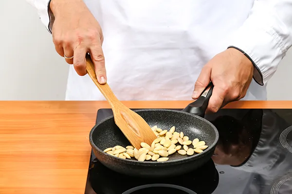
- Добре просушіть мигдаль паперовим рушником або прожарте на сковороді, ні в якому разі не обсмажуючи. Якщо на ньому залишиться волога, маса вийде рідшою, ніж повинна бути.
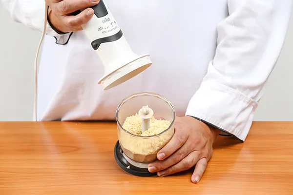
Подрібніть його блендером або кавомолкою, щоб він став борошном.
Корисно знати!
Не перегрійте горіхи в кавомолці або блендері, інакше вони виділять жир і перетворяться на пасту, працювати з якою буде дуже складно. Подрібнюйте в режимі пульсації, після кожної дії перевіряйте чашу з мигдалем.
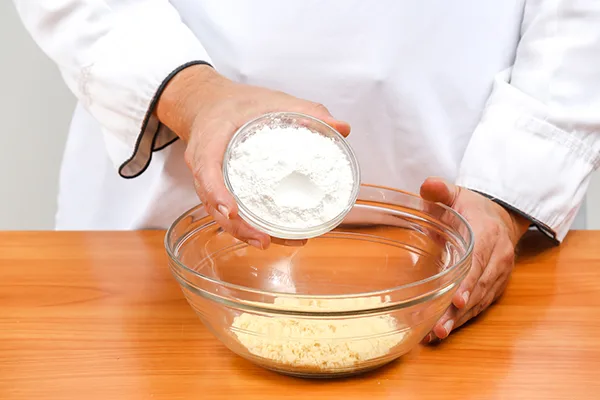
- Зроблене горіхове борошно з’єднайте зі 100 г цукрової пудри і добре перемішайте.
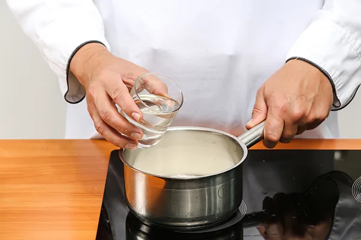
- Цукор залийте водою, додайте сік лимона і нагрійте до 118 С. Якщо у вас немає термометра, стежте за тим, щоб пудра повністю розчинилася у воді, помішуючи сироп. Коли він закипить, не чіпайте його і не перемішуйте, злегка похитуючи посудину туди-сюди, щоб рідина не пригорала до стінок. Готовий сироп буде світлим, ні в якому разі не карамельного кольору.
Важливо!
Не залишайте сироп на плиті без нагляду, він швидко перетвориться в тугу карамель, яка не підійде для марципану. Щоб перевірити готовність, капніть трохи сиропу з ложки в миску з холодною водою і спробуйте скачати з нього кульку. Якщо вийшло – негайно знімайте рідину з вогню.
- Влийте сироп в цукрово-мигдалеву суміш і добре перемішайте.
- Потім пропустіть масу через м’ясорубку, щоб вона була однорідною. Цей крок можна за бажанням не робити.
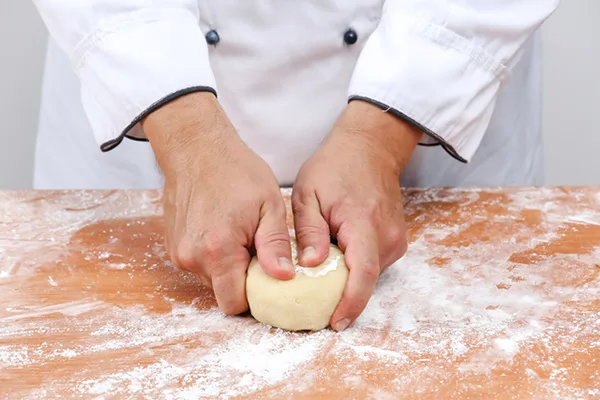
- Коли приготовлена маса охолоне, сформуйте з неї кулю. Якщо вона не збирається, додайте трохи холодної води.
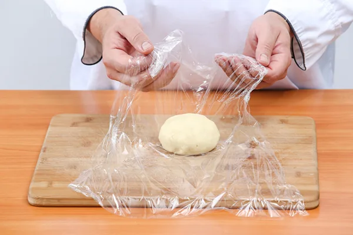
- Загорніть кулю в харчову плівку і залиште «відпочити» при кімнатній температурі на 10 хвилин, потім уберіть в холодильник.
Відео-рецепт
Як зробити кольоровий марципан
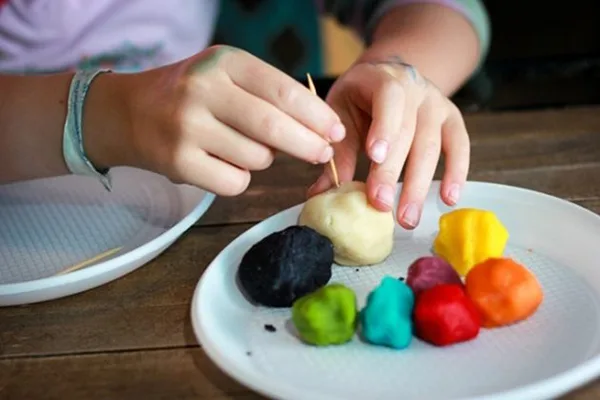
Тепер, коли ви знаєте, як зробити марципан для покриття торта і ліплення фігурок, залишилося визначитися з тим, як його пофарбувати. Використовуйте сухі, гелеві або натуральні харчові барвники, додаючи трохи в масу і вимішуючи її, як пластилін або тісто (якщо фарбується великий шматок).
Якщо ви хочете використовувати натуральні барвники, то для коричневого кольору додайте какао, для рожевого – сік буряка, для синього – чорниці і т.д.
Порада!
Пофарбуйте спочатку невеликий шматочок марципану, а потім з’єднайте його з великим світлим шматком – так колір буде рівномірним.
Як зберігати марципан
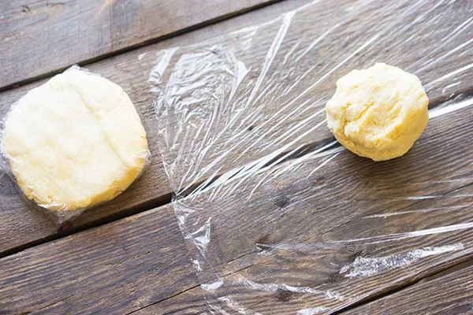
Як готувати марципан для торта – не секрет. Як зберігати його – теж. Завернув в харчову плівку, в герметичній ємності його можна залишити при кімнатній температурі. Завдяки цукру, натуральному консерванту, він не зіпсується протягом декількох місяців. Залишати його на відкритому повітрі неможна – він швидко сохне. Під час роботи з ним відщипуйте шматок для ліплення від загальної маси, іншу частину щільно обертайте плівкою.
Зберігати масу можна і в холодильнику, і навіть в морозильнику – так термін її придатності виросте в кілька разів. Перед роботою з марципаном дайте йому досягти кімнатної температури після перебування на холоді.